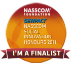

Achievements
/ Awards & Honors
- Finalist for NASSCOM ICT Social Innovation Honours 2011 
- Award of Excellence as Mentor in The Great Mind Challenge-09 by IBM April 2009
- Award for Excellence in e-Governance initiatives in M.P. (2008-09) .
- Young Scientist Award for Physics in 1997 by Council of Science & Technology (M.P.), India
- IT Expert for e-Governance projects in M.P. (2009-10) .
- Program Chair for International conference on MEMS Nano and Smart Systems (ICMENS-10), 4-15 Dec, 2010, China
- Member of IT Audit Advisory Board of M.P. Government (2009-11)
- Nominated as IT expert for M.P. Treasury Online system, IFMIS, 2009
- Member of Editorial Board, ISST Journal of Applied Physics, India
- Associate Editor, ISST Journal of Electrical and Electronics Engineering, India
- Reviewer of Tata Mc-Graw Hill book: Software Project Management by Bob Hughes and Mike Catterell (2009)
- Reviewer of International Journal of Taylor and Francis and Elsevier Science
- Editor in Chief, Fibonacci, first online Open source Magazine, (2009) a joint publication of SF-FOSS, Sun Micro System and NRC-FOSS
- Coordinator, Technology Innovation & Incubation Centre, IIITM, Gwalior
- IT Expert for www.ideasforcm.in by Director General, School of Good Governance and Policy Analysis, Govt. of M.P. 2009
- Associate Editor, Ch. J. of Sc. & Tech. (a joint publication of G. G. Univ. & CGCOST, 2003-2006 Member, Board of studies, Comp. Sc.& IT G. G. University ( 2003-2006)
- Member National Advisory Committee of International Conference on Nano Sc. And Technology (ICANAT-08)
- Member of Theory Modeling and Computational Methods of Semiconductors (TMCS) Network, along with other Indian member Dr. D. D. Sharma from IIISc. Bangalore. Other 12 Institutions of U.K.
- Expert of Moderation Committee for IT and Comp. Sc. Subjects at Dr. B. R. Ambedkar Central University, Lucknow
- Member, Inst. of Physics, London
- Member, Computer Society of India
- CMSN Associate, Basic Energy Sciences, U.S. Department of Energy
- Senior Member, International Association of Computer Science and Information Technology
- Member, International Nanoscience Community
- MEGABAR (International High Pressure Community)